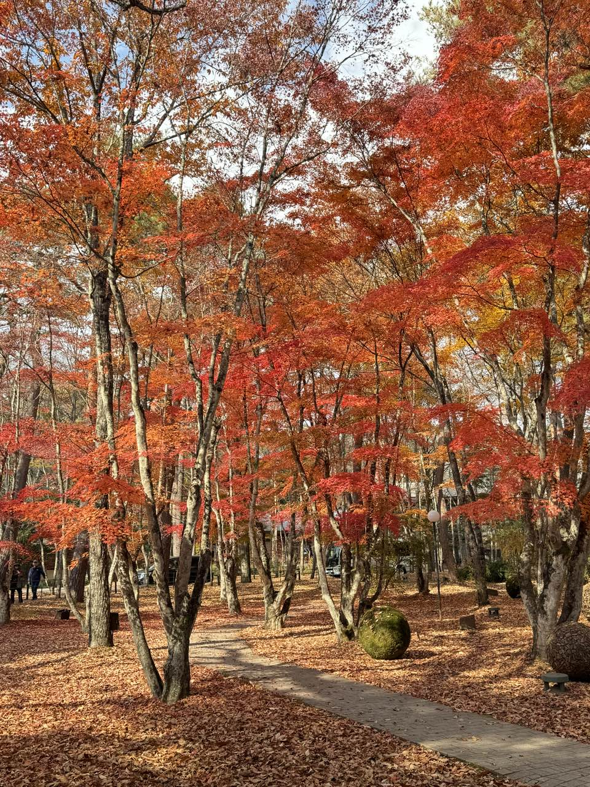
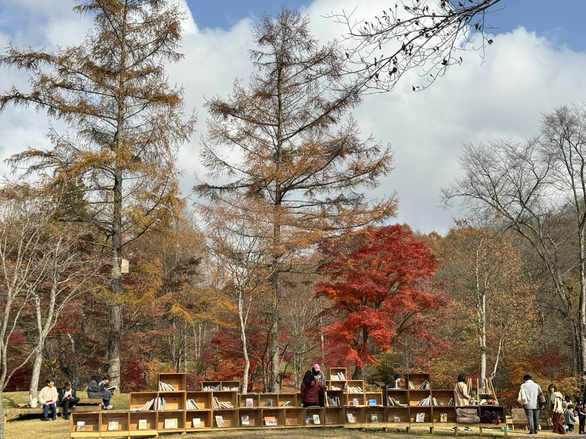
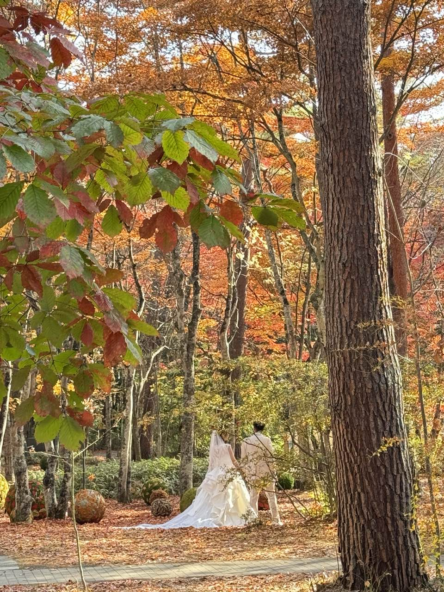
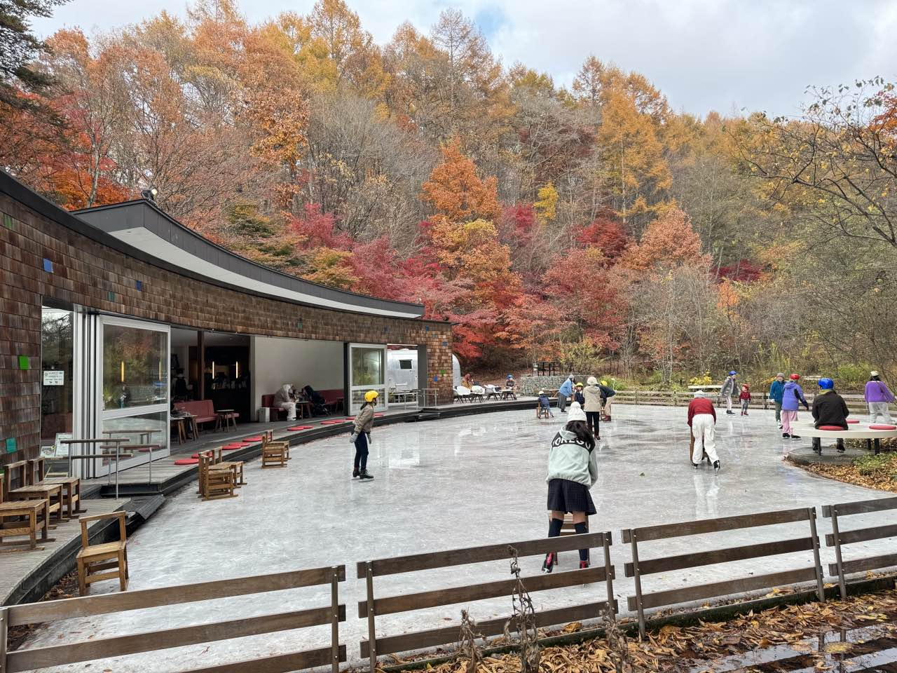
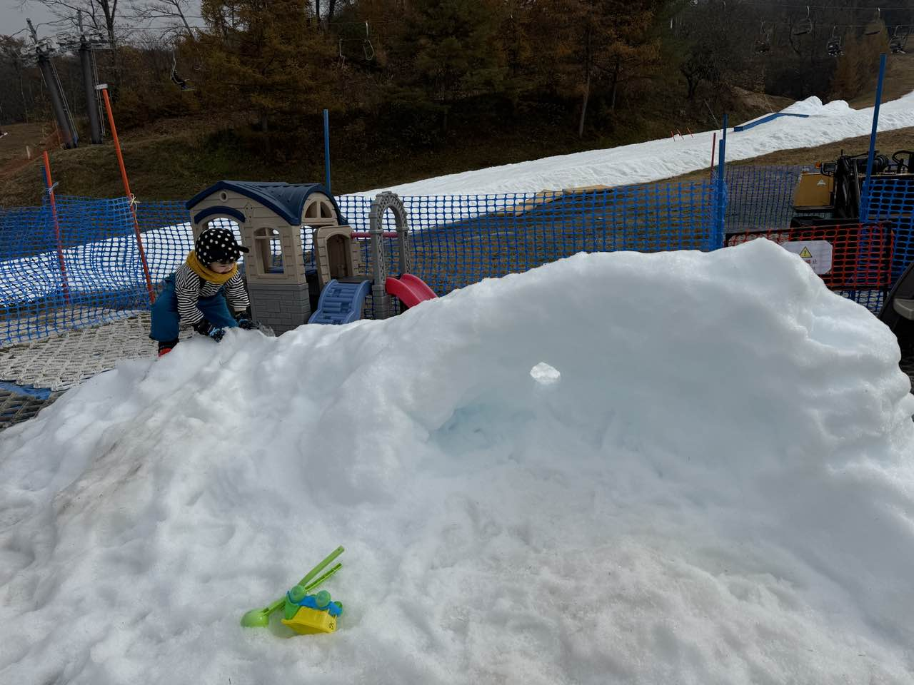
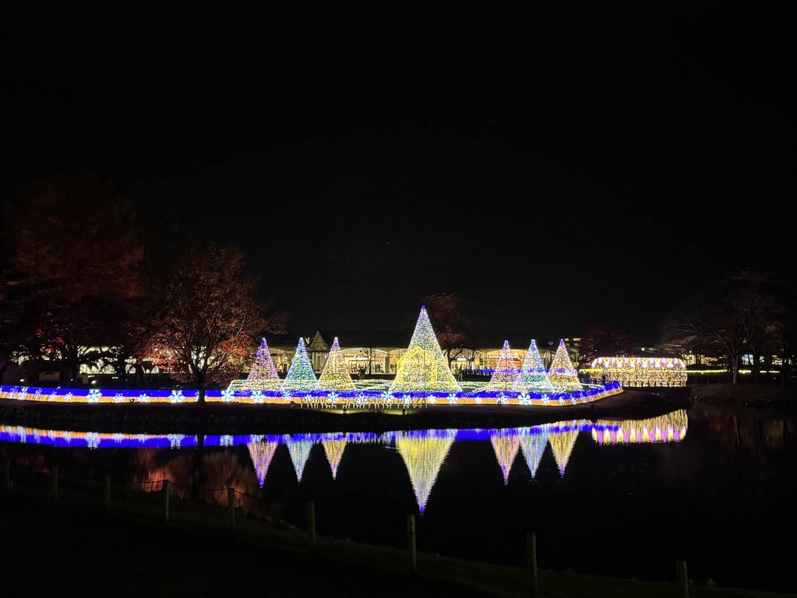
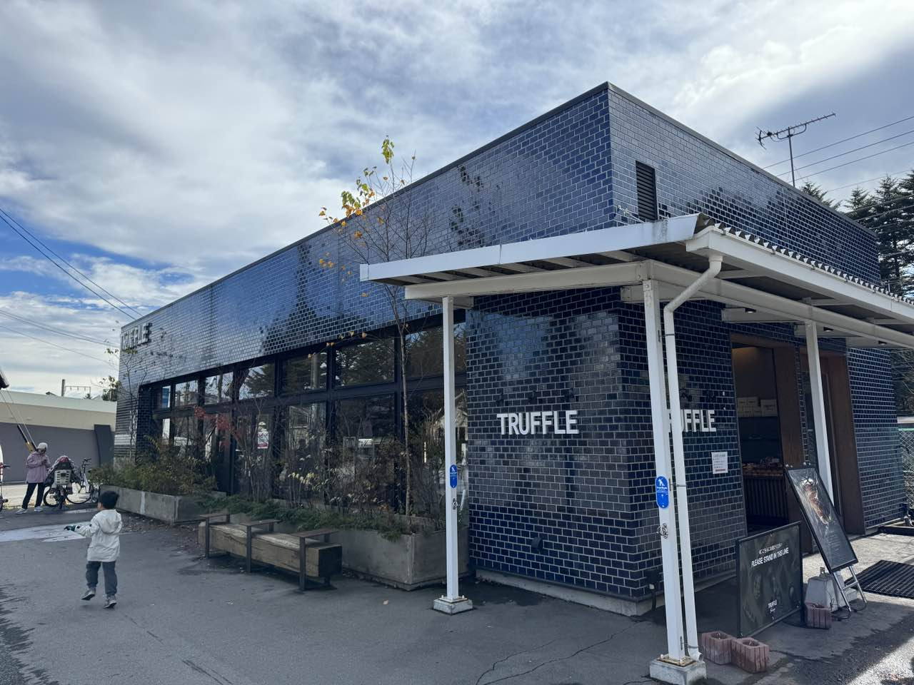
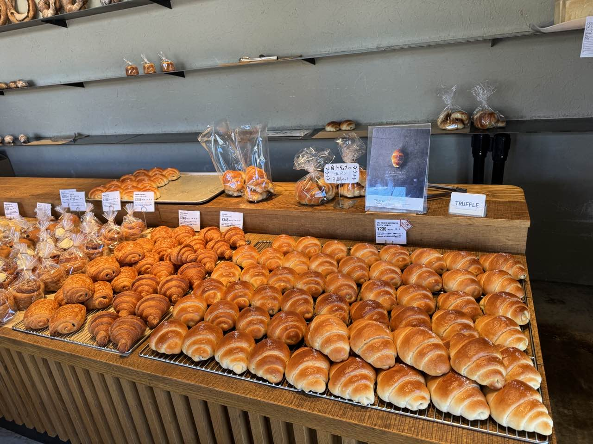
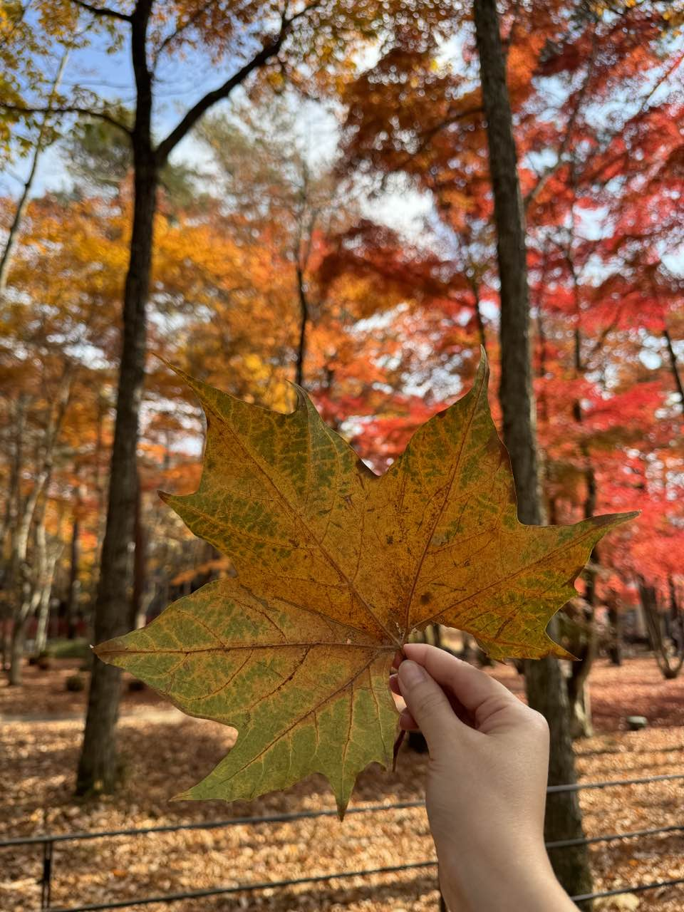

|  |
這次選擇日本輕井澤三天兩夜的小旅行，從東京搭乘新幹線約一小時就可抵達，是日本人的避暑勝地。剛好遇上楓葉季，氣候微涼，處處散發著被楓紅染透的靜謐氛圍，讓人有種短暫逃離日常的幸福感。抵達後，一出站就想起日劇《四重奏》的場景，內心忍不住小小激動。
這次住宿選擇評價不錯、價格又不會太貴的「輕井澤西王子飯店」，先說喔~因為輕井澤是有錢人喜歡的渡假勝地，所以普遍房價都不便宜。這間飯店論地點、房間大小與設施來說算是 CP 值很高的選擇，若還有機會再訪，我會願意再次入住。
|  |
第一天辦理完入住後，我們先去拿人氣餐廳「村民食堂」的號碼牌，再到旁邊的景點「蜻蜓之湯」和「紅葉圖書館」走走。這次運氣很好，居然趕上紅葉圖書館開放的最後一天！這裡沒有傳統圖書館的嚴肅氛圍，而是在戶外擺放了書籍與座位，讓人能一邊翻閱、一邊欣賞周圍的紅葉，坐在秋意的風景裡隨手翻書，別有一番詩意。
|  |
接著前往「石之教堂」與「高原教堂」，兩座教堂風格迥異。石之教堂有一種莊嚴、神秘的力量感，而高原教堂則散發著木質的溫潤氣息。特別的是，當天剛好有人舉行婚禮，當穿著白紗的新娘步出教堂時，連旅人們都忍不住停下腳步，現場那份浪漫幸福氛圍讓人不自覺微笑。
|  |
一個多小時後，終於輪到我們能入座「村民食堂」。日式定食簡單卻用心，暖胃也暖心。下午則挑戰「KERA-IKE滑冰場」，一開始有點搖晃，但旁邊有輔助椅可以練習，很快就找到滑行的樂趣，笑聲此起彼落，能夠在楓葉環繞的場景下溜冰，真的是難忘的體驗。之後散步逛「榆樹街小鎮」，小巧的雜貨店與甜點咖啡店讓人流連忘返。傍晚再衝一波「輕井澤Outlet」，廣大的園區讓人逛到腿軟，建議事前先看好想逛的品牌店，不然真的會迷路。看到戰利品滿袋而歸，仍覺得值回票價。
|  |
|  |
第二天則是屬於冬季的體驗。由於輕井澤這裡的滑雪場以交通便利、設施新穎、租借裝備齊全著稱，即使沒有經驗的新手也能輕鬆上手。冬季雪量雖不及北海道，但有人工造雪支援，雪季開始得早，加上周邊還能購物、泡湯、享受美食，成為結合「玩雪＋度假」的完美地點。
我們租好裝備後直奔「Snow Park」及滑雪場。因為雪季才剛開始，目前主要是人造雪，雪質比較硬，覆蓋面也不算廣。雖然和想像中銀白雪國有點落差，但對於平常不在雪地生活的我們來說，已經足夠新鮮。無論是拉著雪盆高速滑下、體驗滑雪板，還是簡單地玩丟雪球，都能笑到忘記時間。玩得筋疲力盡、睡個午覺後，傍晚趕緊抓緊時間前往Outlet 繼續挖寶，形成「運動＋購物」的黃金行程。
 |
第三天我們換了較悠閒的步調，租腳踏車前往「雲場池」。雲場池被譽為「天鵝湖」，是輕井澤最具代表性的自然景點之一。沿途秋末初冬的樹影伴著微風，抵達後眼前的湖面靜得像一面鏡子，把藍天與楓葉一一映照其中，美得令人屏息。途中還特地買了「木村拓哉最愛的松露麵包」，外脆內軟、香氣濃郁，邊騎邊吃，完全理解為什麼能成為男神心頭好。最後我們再採買伴手禮，將這段旅程的記憶打包帶回家。
|  |
|  |
三天兩夜的旅程，不論是紅葉圖書館的秋意、教堂裡浪漫的婚禮、玩雪帶來的雀躍，或是騎腳踏車去雲場池的靜謐悠閒，都讓輕井澤顯得既豐富又多層次。原本沒預期會看到楓葉，但由於輕井澤緯度較高，氣候轉冷得比較晚，紅葉比想像中更為鮮豔。突然被這意外的美景包圍，讓旅程多了份驚喜感。雖然行程結束，但我已經暗暗決定，下一次還要再訪，看看不同季節的輕井澤會不會帶來另一種驚喜。
|  |